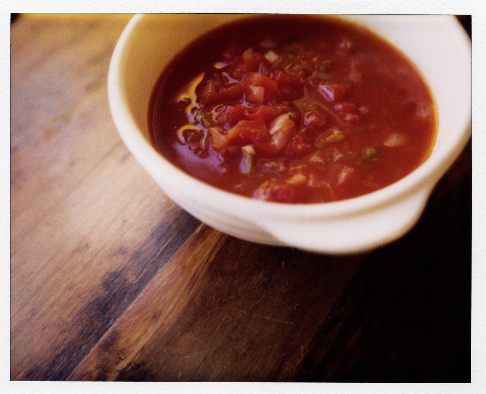
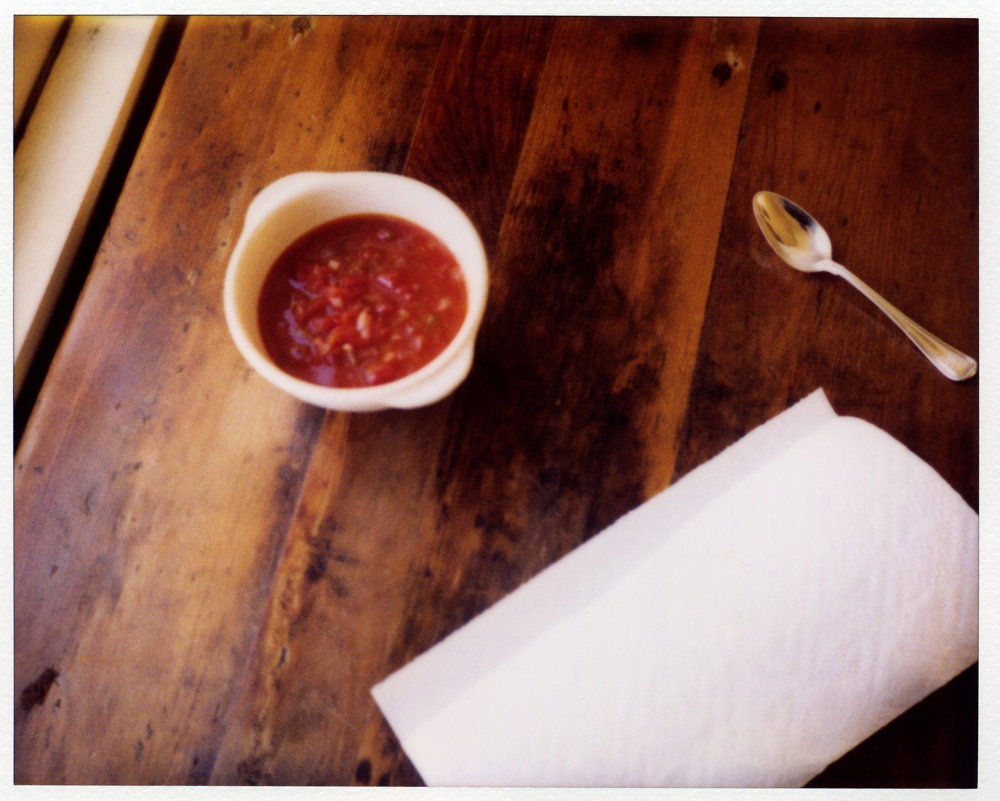

Month: October 2008
Your work is done
I’ve been a little wishy-washy, I know, about the coming of fall this year. One minute, I’m moaning about wool scarves and rain and the end of the world, and the next minute, I’m chirping giddily about kale and apples and flannel sheets. It must be hard to keep up, and I’m sorry about that. If it’s any consolation, know that I too have a hard time keeping up, and I’m the one doing the moaning and chirping. Fall makes my head feel spinny.

Fall also, incidentally, makes me absolutely crazy for soup. C-R-A-Z-Y. Does anyone else experience this phenomenon, or is it my own peculiar seasonal pathology? I mean, is it weird to set the table with only napkins and spoons for weeks on end? Is it sad to eat a diet composed entirely of soft foods if you are under the age of ninety and still have a full set of teeth? Because there is a lot of soup in my life right now, and I intend to keep it that way until sometime in early to mid-2009. No matter how I feel about other aspects of fall, I am consistent, at least, about soup, and I hope that counts for something.
{kind=link}

I’ve written about a decent number of soups here in the past few years, but there is one that I seem to have, until now, completely forgotten to mention. It’s a tomato soup with red onion and cilantro stems, and it is the most effortless, biggest-bang-for-your-buck soup in my repertoire. There are, of course, a million recipes out there for tomato soup, but this one, I think, is worthy of note, both for its utter simplicity and its unusual seasoning. It’s bright and warming, and though it is nothing but good for you, it feels surprisingly hearty, which makes it perfect fall fare. It is also one of my mother’s favorite soups, and that’s a solid endorsement, because the lady is a very fine cook. She’s the one who found the recipe, actually, in the April 1995 issue of Martha Stewart Living, in that “What’s for Dinner?” section with the perforated, tear-out recipe cards. (I love that section.) I was in my sophomore year of high school at the time, and though I can’t entirely endorse my taste in that era – my wardrobe back then consisted largely of mouse-brown oversize men’s pants that I bought for 11 cents each at a thrift store in Edmond – I did know a good soup when I tasted it. In the years that followed my mother’s discovery of this recipe, we ate it on a regular basis, usually with a dab of sour cream on top. Even my father liked it, which says a lot, since I remember him mainly as a cream-soups-and-
clam-chowder kind of guy.
{kind=link}
But recipes come and recipes go, and for a while, I kind of forgot about that old tomato soup. I am often distracted, I should admit, by the shiny lure of a new recipe, and sometimes, against my will, the older ones wind up ignored. I can’t help it. But this past weekend, my mother happened to mention the tomato soup, and I thought, Oh, right! That soup with the cilantro stems! No matter the time of year, tomato soup always sounds good, doesn’t it? Fresh tomato season may be over, but canned ones don’t care about the calendar. So I went to the store, and today, in a grand total of 40 minutes – 30 of which I spent sitting at the kitchen table, writing this – I made a potful. Basically, you start by warming some olive oil in a large saucepan, and then you dump in a diced red onion and one clove of garlic, minced. While they cook, you mince half of a jalapeño and chop up the stems from one bunch of cilantro. That’s my favorite part of the whole recipe, those cilantro stems. I don’t know about you, but ordinarily, when I buy cilantro, I use only the leaves. Until this recipe came along, I didn’t know that the stems could be used at all. But the truth is, they have loads of flavor, fresh and sprightly and clean, and their delicately crunchy texture is perfectly suited to a rustic, chunky soup like this one. So you add them, along with the jalapeño, to the softened onion and garlic, and then you pour in the juice from a can of tomatoes, the tomatoes themselves, and some water. Bring it to a simmer, and ba-ding! Your work is done. Now, go sit down with a glass of wine. Dinner will be ready in half an hour.
Thank you, Mom.
Tomato Soup with Red Onion and Cilantro Stems
Adapted from Martha Stewart Living, April 1995
For this recipe, I like Muir Glen canned tomatoes.
1 Tbsp. olive oil
1 medium red onion, diced
1 medium garlic clove, minced
½ tsp. kosher salt, or to taste
1/8 tsp. freshly ground black pepper
¼ cup cilantro stems, cut into ½-inch lengths
½ of a jalapeño pepper, seeded and minced
1 28-ounce can whole peeled tomatoes
1 Tbsp. fresh lime juice
Sour cream, for serving
Warm the oil in a large saucepan over medium-low heat. Add the onions and garlic, and cook until the onions are soft and translucent, about 5 to 7 minutes. Add the salt, pepper, cilantro stems, and jalapeño, and stir well. Strain the tomatoes, and add the juice to the saucepan. Then seed the tomatoes, chop them coarsely, and add them to the pan as well. Add 2 cups water, and stir to combine. Simmer for 30 minutes. Add the lime juice. Then taste, and adjust the seasoning, if needed.
Serve hot, with a dollop of sour cream.
Yield: 4 servings
This old thing
So, have you eaten your boiled kale yet? Because dessert is ready, but you have to finish your vegetables before you can have any. That’s how it works. I would like to introduce my new favorite dessert. Which, conveniently, is also the most ridiculously easy apple tart I have ever made. Isn’t it charming? In a rustic, “oh, this old thing?” sort of way? It’s the edible equivalent of a dog-eared book: a little rough around the edges, rumpled here and there, but 100 percent lovable on the inside. It’s the kind of dessert that wants to be eaten in a red barn with a loft full of hay bales, or in a bed with flannel sheets, while the wind…
Read morePleasantly sogged
I never thought I would say these words, but I like boiled kale. Kind of a lot. This may not be the most exciting confession I have ever made, but please bear with me. Or, at least, don’t knock it till you’ve tried it. Boiled kale, I mean. I don’t usually like boiled anything – except, of course, pasta – but boiled kale, yes. It’s the wool sock of winter vegetables: warming, soothing, completely unglamorous, as cozy as a bunch of green leaves can be. If I could climb into a bowl of anything right now, I think I would choose kale. That’s the ultimate measure, you know, of a cool-weather food: would you want to lie down in a…
Read moreA second shot
I’ve got nothing against fall. Really, it’s just fine. It’s plums and pumpkins and leaves changing color and apple cider and all that. The problem is that it paves the way for winter. The way I see it, fall is sort of like the butler in an English novel, and winter is the shadowy, black-clad, slightly deranged visitor at the gate. Fall, being very polite and professional, escorts Winter into the parlor to have a seat. Then, while Fall is upstairs, alerting his master to the arrival of the visitor, Winter wreaks havoc on the manor, downing an entire decanter of brandy, startling the maid, and stealing the sterling tea service from the sideboard in the dining room. Is this…
Read more